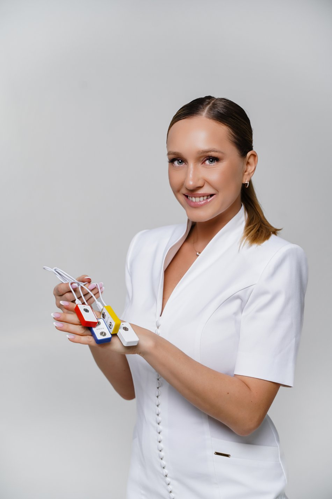
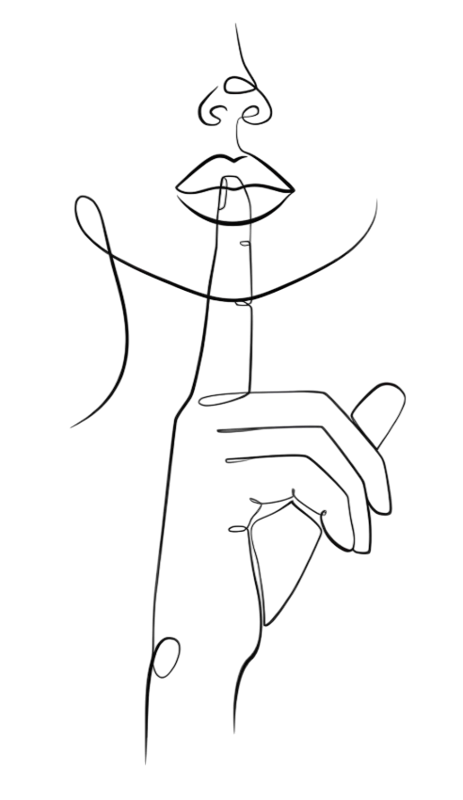
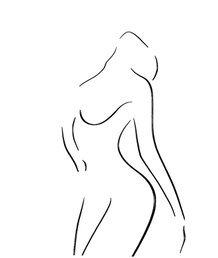
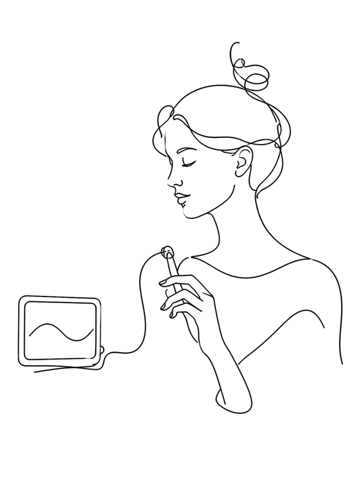

Музей Кегеля
Бесплатная база знаний о тренажёрах
для мышц тазового дна
Что это за приборы, как они устроены, чем отличаются друг от друга и кому подходят. Раздел открыт полностью: без регистрации и подписки.

Каталог тренажёров
Выберите категорию

Вагинальные шарики
Классика домашних тренировок: мышцы удерживают шарик и работают в естественном режиме.
Подробнее →
Конусы Кегеля
Набор конусов разного веса: нагрузку увеличивают постепенно, от лёгкого к более тяжёлому.
Подробнее →
Аппарат БОС Callibri BeFit PRO
Датчик показывает работу мышц на экране: видно силу сокращения и качество расслабления.
Подробнее →Нефритовое яйцо
Традиционная практика с каменным яйцом. Фото, описание и рекомендации — в работе.
Перинеометр
Первый прибор биологической обратной связи, с которым работал Арнольд Кегель.
Электростимулятор
Прибор для стимуляции мышц. Описание и рекомендации появятся позже.
Это образцы карточек: тексты и фото тренажёров добавим по материалам центра.
Как выбрать тренажёр
Важно понимать исходное состояние мышц: что тренировать, а что — расслаблять.
Начинают с лёгких моделей и только потом добавляют вес и нагрузку.
Медицинский силикон, индивидуальное использование и уход после каждой тренировки.
Важно. Материалы музея носят справочный характер и не заменяют консультацию специалиста. При боли, дискомфорте, гипертонусе и в период восстановления после родов подбирать тренажёр лучше вместе с врачом или тренером мышц тазового дна.